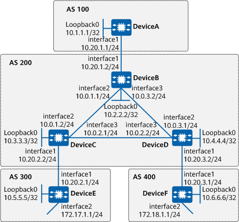

Example for Configuring BGP to Advertise the Default Route
Networking Requirements
On the network shown in Figure 1, all devices run BGP. EBGP connections are established between DeviceA and DeviceB, between DeviceC and DeviceE, and between DeviceD and DeviceF. IBGP connections are established between DeviceB and DeviceC, and between DeviceB and DeviceD.
You can configure DeviceE to advertise the default route to DeviceC and configure DeviceF to advertise the default route to DeviceD. In this way, AS 200 will have two equal-cost default routes, ensuring that traffic exiting AS 200 can be load-balanced between DeviceE and DeviceF.

In this example, interface 1, interface 2, and interface 3 represent 10GE0/0/1, 10GE0/0/2, and 10GE0/0/3, respectively.

To complete the configuration, you need the following data:
Router ID and AS number of each device: DeviceA, DeviceB, DeviceC, DeviceD, DeviceE, and DeviceF
Names of the import policies to be configured on DeviceC and DeviceD
Local_Pref value to be set for the default route to be accepted on DeviceD
Precautions
During the configuration, note the following:
A default route can represent all routes on the entire network. For example, in a stub AS scenario, the local device can use a default route, instead of advertising network-wide routes, to forward traffic to an external network. A default route can also represent all routes except specific ones. For example, it can be used in multi-homing load balancing scenarios.
During the establishment of a peer relationship, if the IP address of the specified peer is a loopback interface address or a sub-interface address, the peer connect-interface command must be run on both ends to ensure correct connection.
- To improve security, you are advised to deploy BGP security measures. For details, see "Configuring BGP Authentication." Keychain authentication is used as an example. For details, see Example for Configuring Keychain Authentication for BGP.
Configuration Roadmap
The configuration roadmap is as follows:
Configure OSPF on DeviceB, DeviceC, and DeviceD.
Configure EBGP connections between DeviceA and DeviceB, between DeviceC and DeviceE, and between DeviceD and DeviceF.
Configure IBGP connections between DeviceB and DeviceC, and between DeviceB and DeviceD.
Configure an import routing policy on DeviceC to accept only the default route.
Configure an import routing policy on DeviceD to accept the default route and all specific routes, and set a Local_Pref value for the accepted default route.
Procedure
- Assign an IP address to each interface involved. For detailed configurations, see configuration scripts.
- Configure OSPF.
# Configure DeviceB.
[DeviceB] ospf 1 [DeviceB-ospf-1] area 0 [DeviceB-ospf-1-area-0.0.0.0] network 10.0.1.0 0.0.0.255 [DeviceB-ospf-1-area-0.0.0.0] network 10.0.3.0 0.0.0.255 [DeviceB-ospf-1-area-0.0.0.0] network 10.2.2.2 0.0.0.0 [DeviceB-ospf-1-area-0.0.0.0] quit [DeviceB-ospf-1] quit
# Configure DeviceC.
[DeviceC] ospf 1 [DeviceC-ospf-1] area 0 [DeviceC-ospf-1-area-0.0.0.0] network 10.0.1.0 0.0.0.255 [DeviceC-ospf-1-area-0.0.0.0] network 10.0.2.0 0.0.0.255 [DeviceC-ospf-1-area-0.0.0.0] network 10.3.3.3 0.0.0.0 [DeviceC-ospf-1-area-0.0.0.0] quit [DeviceC-ospf-1] quit
# Configure DeviceD.
[DeviceD] ospf 1 [DeviceD-ospf-1] area 0 [DeviceD-ospf-1-area-0.0.0.0] network 10.0.2.0 0.0.0.255 [DeviceD-ospf-1-area-0.0.0.0] network 10.0.3.0 0.0.0.255 [DeviceD-ospf-1-area-0.0.0.0] network 10.4.4.4 0.0.0.0 [DeviceD-ospf-1-area-0.0.0.0] quit [DeviceD-ospf-1] quit
- Configure BGP connections.
# Configure DeviceA.
[DeviceA] bgp 100 [DeviceA-bgp] router-id 10.1.1.1 [DeviceA-bgp] peer 10.20.1.2 as-number 200 [DeviceA-bgp] quit
# Configure DeviceB.
[DeviceB] bgp 200 [DeviceB-bgp] router-id 10.2.2.2 [DeviceB-bgp] peer 10.20.1.1 as-number 100 [DeviceB-bgp] network 10.20.1.0 24 [DeviceB-bgp] peer 10.3.3.3 as-number 200 [DeviceB-bgp] peer 10.3.3.3 connect-interface LoopBack0 [DeviceB-bgp] peer 10.4.4.4 as-number 200 [DeviceB-bgp] peer 10.4.4.4 connect-interface LoopBack0 [DeviceB-bgp] quit
# Configure DeviceC.
[DeviceC] bgp 200 [DeviceC-bgp] router-id 10.3.3.3 [DeviceC-bgp] peer 10.20.2.1 as-number 300 [DeviceC-bgp] network 10.20.2.0 24 [DeviceC-bgp] peer 10.2.2.2 as-number 200 [DeviceC-bgp] peer 10.2.2.2 connect-interface LoopBack0 [DeviceC-bgp] quit
# Configure DeviceD.
[DeviceD] bgp 200 [DeviceD-bgp] router-id 10.4.4.4 [DeviceD-bgp] peer 10.20.3.1 as-number 400 [DeviceD-bgp] network 10.20.3.0 24 [DeviceD-bgp] peer 10.2.2.2 as-number 200 [DeviceD-bgp] peer 10.2.2.2 connect-interface LoopBack0 [DeviceD-bgp] quit
# Configure DeviceE.
[DeviceE] bgp 300 [DeviceE-bgp] router-id 10.5.5.5 [DeviceE-bgp] peer 10.20.2.2 as-number 200 [DeviceE-bgp] network 10.1.1.0 24
# Configure DeviceF.
[DeviceF] bgp 400 [DeviceF-bgp] router-id 10.6.6.6 [DeviceF-bgp] peer 10.20.3.2 as-number 200 [DeviceF-bgp] network 10.11.1.0 24
- Configure DeviceE and DeviceF to advertise the default route.
# Configure DeviceE to advertise the default route.
[DeviceE-bgp] ipv4-family unicast [DeviceE-bgp-af-ipv4] peer 10.20.2.2 default-route-advertise [DeviceE-bgp-af-ipv4] quit [DeviceE-bgp] quit
# Configure DeviceF to advertise the default route.
[DeviceF-bgp] ipv4-family unicast [DeviceF-bgp-af-ipv4] peer 10.20.3.2 default-route-advertise [DeviceF-bgp-af-ipv4] quit [DeviceF-bgp] quit
# Check the routing table of DeviceB.
[DeviceB] display bgp routing-table BGP Local router ID is 10.2.2.2 Status codes: * - valid, > - best, d - damped, x - best external, a - add path, h - history, i - internal, s - suppressed, S - Stale Origin : i - IGP, e - EGP, ? - incomplete RPKI validation codes: V - valid, I - invalid, N - not-found Total Number of Routes: 7 Network NextHop MED LocPrf PrefVal Path/Ogn *>i 0.0.0.0 10.20.2.1 0 100 0 300i * i 10.20.3.1 0 100 0 400i *>i 10.1.1.0/24 10.20.2.1 0 100 0 300i *>i 10.11.1.0/24 10.20.3.1 0 100 0 400i *> 10.20.1.0 0.0.0.0 0 0 i *>i 10.20.2.0 10.3.3.3 0 100 0 i *>i 10.20.3.0 10.4.4.4 0 100 0 i
The command output shows that DeviceB has received the default route and all specific routes from AS 300 and AS 400.
- Configure import routing policies.
# Configure an IP prefix list named default on DeviceC to accept only the default route.
[DeviceC] ip ip-prefix default permit 0.0.0.0 0 [DeviceC] bgp 200 [DeviceC-bgp] peer 10.20.2.1 ip-prefix default import [DeviceC-bgp] quit
# Configure a route-policy named set-default-low on DeviceD to accept the default route and all specific routes, and set a Local_Pref value for the accepted default route.
[DeviceD] ip as-path-filter 10 permit ^(400_)+$ [DeviceD] ip as-path-filter 10 permit ^(400_)+_[0-9]+$ [DeviceD] ip ip-prefix default permit 0.0.0.0 0 [DeviceD] route-policy set-default-low permit node 10 [DeviceD-route-policy] if-match ip-prefix default [DeviceD-route-policy] apply local-preference 80 [DeviceD-route-policy] quit [DeviceD] route-policy set-default-low permit node 20 [DeviceD-route-policy] quit [DeviceD] bgp 200 [DeviceD-bgp] peer 10.20.3.1 as-path-filter 10 import [DeviceD-bgp] peer 10.20.3.1 route-policy set-default-low import [DeviceD-bgp] quit
Verifying the Configuration
# Check the routing table of DeviceB.
[DeviceB] display bgp routing-table BGP Local router ID is 10.2.2.2 Status codes: * - valid, > - best, d - damped, x - best external, a - add path, h - history, i - internal, s - suppressed, S - Stale Origin : i - IGP, e - EGP, ? - incomplete RPKI validation codes: V - valid, I - invalid, N - not-found Total Number of Routes: 6 Network NextHop MED LocPrf PrefVal Path/Ogn *>i 0.0.0.0 10.20.2.1 0 100 0 300i * i 10.20.3.1 0 80 0 400i *>i 10.11.1.0/24 10.20.3.1 0 100 0 400i *> 10.20.1.0 0.0.0.0 0 0 i *>i 10.20.2.0 10.3.3.3 0 100 0 i *>i 10.20.3.0 10.4.4.4 0 100 0 i
The command output shows that DeviceB has accepted only the default route from AS 300 and has accepted the default route and all specific routes from AS 400. It also shows that the Local_Pref value of the default route accepted from AS 400 has been set to 80.
Configuration Scripts
DeviceA
# sysname DeviceA # interface 10GE0/0/1 ip address 10.20.1.1 255.255.255.0 # interface LoopBack0 ip address 10.1.1.1 255.255.255.255 # bgp 100 peer 10.20.1.2 as-number 200 # ipv4-family unicast peer 10.20.1.2 enable # return
DeviceB
# sysname DeviceB # interface 10GE0/0/1 ip address 10.20.1.2 255.255.255.0 # interface 10GE0/0/2 ip address 10.0.1.1 255.255.255.0 # interface 10GE0/0/3 ip address 10.0.3.2 255.255.255.0 # interface LoopBack0 ip address 10.2.2.2 255.255.255.255 # bgp 200 peer 10.3.3.3 as-number 200 peer 10.3.3.3 connect-interface LoopBack0 peer 10.4.4.4 as-number 200 peer 10.4.4.4 connect-interface LoopBack0 peer 10.20.1.1 as-number 100 # ipv4-family unicast network 10.20.1.0 255.255.255.0 peer 10.3.3.3 enable peer 10.4.4.4 enable peer 10.20.1.1 enable # ospf 1 area 0.0.0.0 network 10.2.2.2 0.0.0.0 network 10.0.1.0 0.0.0.255 network 10.0.3.0 0.0.0.255 # return
DeviceC
# sysname DeviceC # interface 10GE0/0/1 ip address 10.20.2.2 255.255.255.0 # interface 10GE0/0/2 ip address 10.0.1.2 255.255.255.0 # interface 10GE0/0/3 ip address 10.0.2.1 255.255.255.0 # interface LoopBack0 ip address 10.3.3.3 255.255.255.255 # bgp 200 peer 10.2.2.2 as-number 200 peer 10.2.2.2 connect-interface LoopBack0 peer 10.20.2.1 as-number 300 # ipv4-family unicast network 10.20.2.0 255.255.255.0 peer 10.2.2.2 enable peer 10.20.2.1 enable peer 10.20.2.1 ip-prefix default import # ospf 1 area 0.0.0.0 network 10.3.3.3 0.0.0.0 network 10.0.1.0 0.0.0.255 network 10.0.2.0 0.0.0.255 # ip ip-prefix default index 10 permit 0.0.0.0 0 # return
DeviceD
# sysname DeviceD # interface 10GE0/0/1 ip address 10.20.3.2 255.255.255.0 # interface 10GE0/0/2 ip address 10.0.3.1 255.255.255.0 # interface 10GE0/0/3 ip address 10.0.2.2 255.255.255.0 # interface LoopBack0 ip address 10.4.4.4 255.255.255.255 # bgp 200 peer 10.2.2.2 as-number 200 peer 10.2.2.2 connect-interface LoopBack0 peer 10.20.3.1 as-number 400 # ipv4-family unicast network 10.20.3.0 255.255.255.0 peer 10.2.2.2 enable peer 10.20.3.1 enable peer 10.20.3.1 as-path-filter 10 import peer 10.20.3.1 route-policy set-default-low import # ospf 1 area 0.0.0.0 network 10.4.4.4 0.0.0.0 network 10.0.2.0 0.0.0.255 network 10.0.3.0 0.0.0.255 # ip ip-prefix default index 10 permit 0.0.0.0 0 # ip as-path-filter 10 index 10 permit ^(400_)+$ ip as-path-filter 10 index 20 permit ^(400_)+_[0-9]+$ # route-policy set-default-low permit node 10 if-match ip-prefix default apply local-preference 80 # route-policy set-default-low permit node 20 # return
DeviceE
# sysname DeviceE # interface 10GE0/0/1 ip address 10.20.2.1 255.255.255.0 # interface 10GE0/0/2 ip address 172.17.1.1 255.255.255.0 # interface LoopBack0 ip address 10.5.5.5 255.255.255.255 # bgp 300 peer 10.20.2.2 as-number 200 # ipv4-family unicast network 10.1.1.0 255.255.255.0 peer 10.20.2.2 enable peer 10.20.2.2 default-route-advertise # return
DeviceF
# sysname DeviceF # interface 10GE0/0/1 ip address 10.20.3.1 255.255.255.0 # interface 10GE0/0/2 ip address 172.18.1.1 255.255.255.0 # interface LoopBack0 ip address 10.6.6.6 255.255.255.255 # bgp 400 peer 10.20.3.2 as-number 200 # ipv4-family unicast network 10.11.1.0 255.255.255.0 peer 10.20.3.2 enable peer 10.20.3.2 default-route-advertise # return